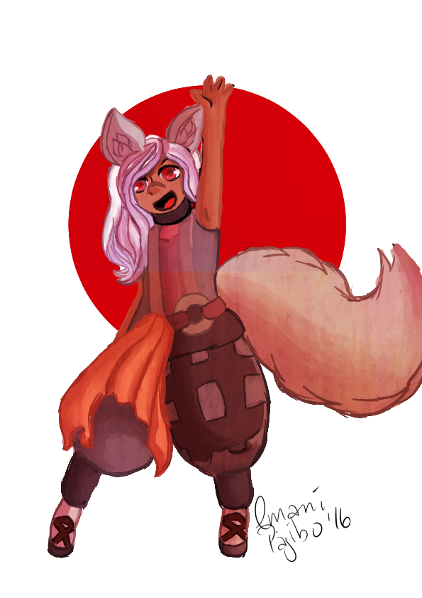
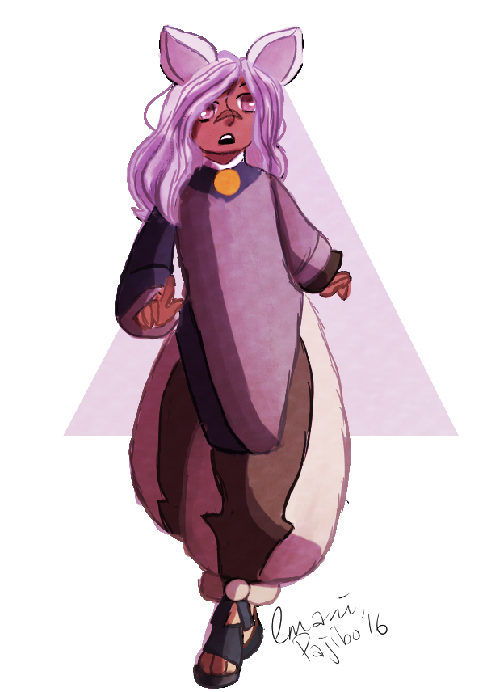

- Tutorials
- Recommended Programs and Products
- Links
Painterly Paj's Guide to Digital Art

This website acts as an online tutorial and guide to help young artists make
the transition from traditional drawing into digital media through helpful
tips and links to help get them started.
In addition to guides and tutorials, this site also provides a number of
recommended items and programs that fit every price range.
